왜 자격시험을 공부 지도로 쓰나요
Frank Coyle 교수는 30년 넘게 컴퓨터과학을 가르쳤고 지금은 UC(University of California) 버클리에 있어요. 그의 학생들은 AI(Artificial Intelligence) 때문에 컴퓨터과학이 더는 취업으로 가는 확실한 길이 아니라는 고민을 안고 있어요. 그래서 그는 학생들을 에이전틱 AI 시대에 맞춰 준비시킬 방법을 찾다가 Claude Certified Architect 시험을 만났어요.
그가 이 시험을 권하는 이유는 하나예요. Anthropic은 사람들이 Claude를 실제로 어떻게 쓰는지, 어디서 문제가 생기는지 알고 있어요. 그러니 이 회사가 정한 시험 범위가 곧 현장에서 부딪힐 문제의 목록이라는 거예요. 첫 화면의 부제도 'Inside the CCA Exam: A Field Guide to Building Agentic Systems'예요.
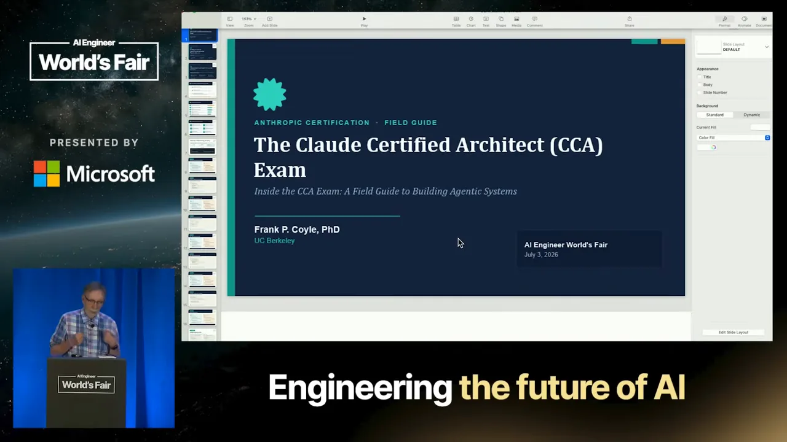
만들고, 틀리고, 다시 만들기
본론 전에 그는 자기 교육 철학을 꺼내요. 미술가이자 교육자였던 Sister Corita Kent의 규칙 6번이에요. 슬라이드 아래 세 칸이 이 문장을 풀어 쓴 거예요. 자유롭게 실험하고, 이해하려면 만들어 보고, 첫 시도에 점수를 매기지 말라는 뜻이에요.
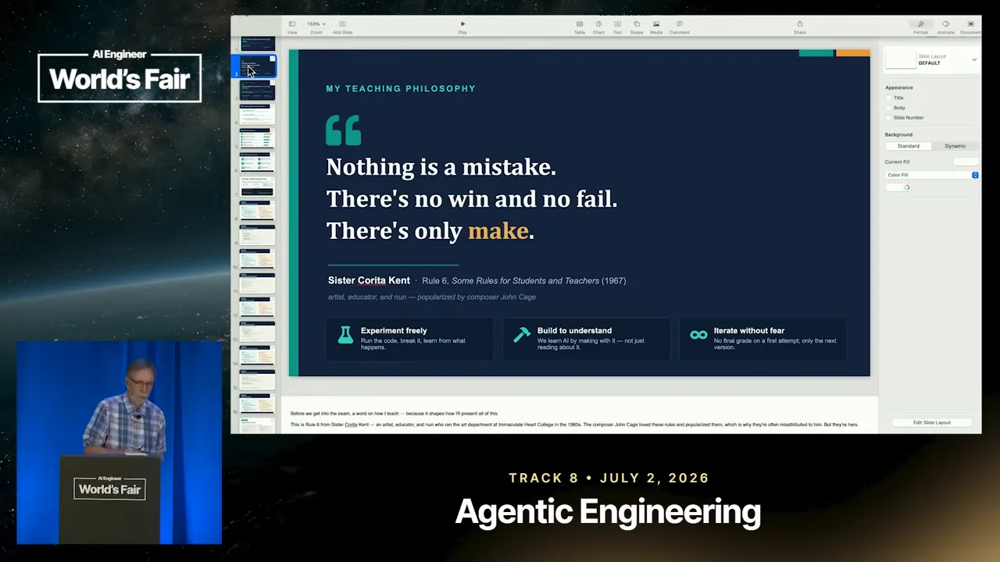
만들면 대부분은 안 돌아가요. 다음 슬라이드는 에디슨의 말로 알려진 "1만 가지 안 되는 방법을 찾았을 뿐"을 내걸고, LLM(Large Language Model)을 다룰 때는 막다른 길도 진전이라고 적어요. 아래 세 칸이 핵심이에요. 안티패턴은 신호이고, 무엇이 안 되는지 아는 것도 지식이며, 그걸 가드레일로 바꾸라는 거예요.
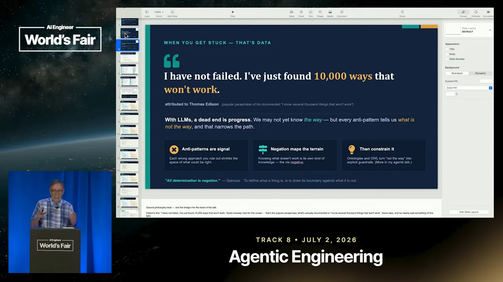
그는 1990년대 객체지향 프로그래밍과 함께 퍼진 디자인 패턴 운동을 떠올려요. 그때 객체에 패턴이 있었듯 이제 에이전트에도 패턴이 있고, 그만큼 안티패턴도 있어요. 하지 말아야 할 것을 이해하는 것이 해야 할 것으로 가는 열쇠라는 게 그의 말이에요.
CCA 시험은 어떻게 생겼나요
첫 슬라이드는 시험의 겉모습을 세 줄로 정리해요. 2026년 3월 12일에 나온 Anthropic의 첫 공식 기술 자격이고, Claude Partner Network의 일부예요. 60문항을 120분 안에 풀고, 100~1,000점 척도에서 720점이 합격선이에요. 세 번째 줄이 가장 중요해요. 모든 문제가 망가진 루프, 범위를 잘못 잡은 도구, 부하를 받는 시스템 같은 운영 상황을 던지고 가장 나은 설계 판단을 고르게 해요.
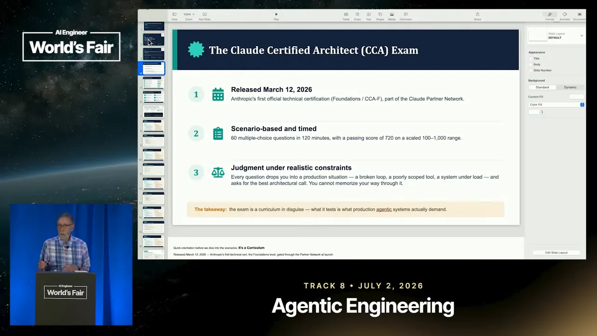
발표자는 회사 단위로 응시할 수 있고, 개인도 99달러를 내면 6개월에 한 번 볼 수 있다고 말해요. 감독관이 있고 시간도 재요. 객관식이지만 현실적인 제약과 상황 위에 문제가 서 있어서 외워서는 통과하기 어렵다고 해요.
다섯 영역과 비중
다음 슬라이드는 다섯 영역을 비중 순으로 늘어놨어요. 그래서 왼쪽 번호가 1, 3, 4, 2, 5 순서로 섞여 있어요. 주황 막대 하나만 길게 튀어나온 게 에이전틱 아키텍처와 오케스트레이션(27%)이에요. 시험의 4분의 1이 넘어요. 영역 설명에도 루프, stop_reason, 훅을 통한 가드레일이 적혀 있어요.
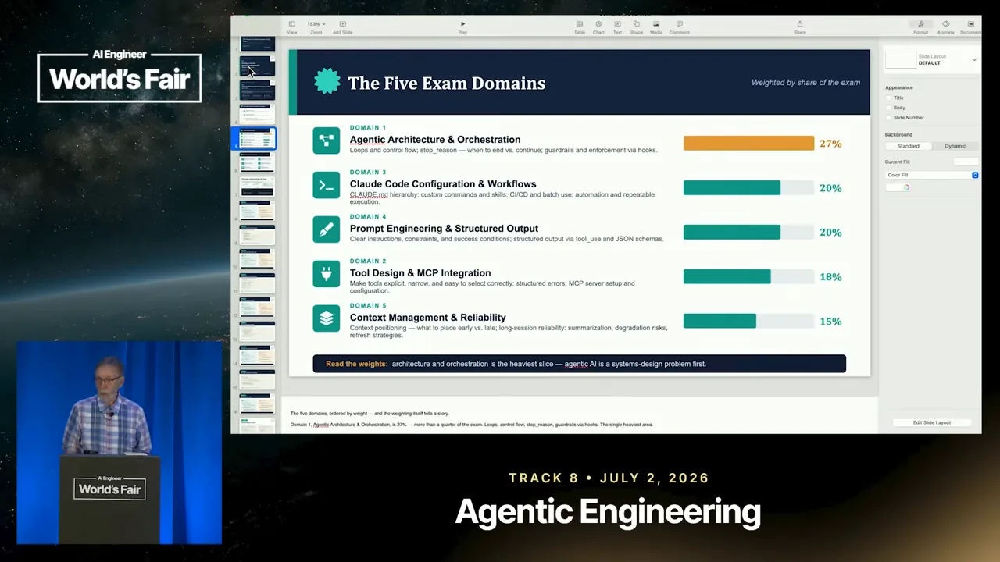
발표자는 시험을 볼 생각이 없어도 이 다섯 주제는 알아 두라고 해요. 특히 JSON을 써서 출력을 구조화하는 일은 어디서나 나온다고 강조해요.
여섯 시나리오 중 네 개가 뽑혀요
시험의 뼈대는 여섯 개의 운영 시나리오예요. 오른쪽 위 '4 of 6 drawn per exam'처럼, 시험마다 넷이 무작위로 뽑히고 모든 문제가 그 넷 중 하나에 묶여요. 카드마다 오른쪽 위에 관련 영역 번호(D1·5 같은)가 붙어 있어요. 발표는 이 순서대로 시나리오 1~5를 다루고, 6번 구조화된 데이터 추출은 이 목록에서만 보여 줘요.
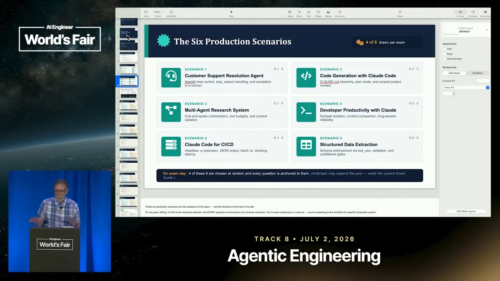
발표자는 시나리오마다 '하지 말아야 할 것'을 함께 보여 주겠다고 말해요. 답이 여러 개로 보일 때 틀린 쪽을 먼저 지울 수 있으면 정답이 보이기 때문이에요. 시나리오 4의 하위 작업 격리를 두고는, 멀티스레드 프로그래밍에서 메모리를 공유하면 동기화 문제가 생기듯 에이전트도 서로 독립적으로 두라고 비유해요.
시나리오 1: 루프와 stop_reason
시나리오 1로 들어가기 전에 발표자는 루프 이야기를 해요. 요즘 모두가 루프를 말해요. 슬라이드 아래쪽 검은 상자의 인용 두 개가 그 예예요. Claude Code를 만든 Boris Cherny는 "내 일은 루프를 쓰는 것"이라고 하고, OpenClaw를 만든 Peter Steinberger는 "에이전트에게 프롬프트를 주는 루프를 설계한다"고 해요.
위쪽 상자가 그의 반론이에요. 루프는 새것이 아니에요. 1966년 Böhm과 Jacopini는 순차(sequence), 조건(conditional), 반복(loop) 세 가지만 있으면 튜링 완전한 언어가 된다는 것을 보였어요. 세 칸 중 'LOOP' 칸만 초록으로 칠해져 있어요.
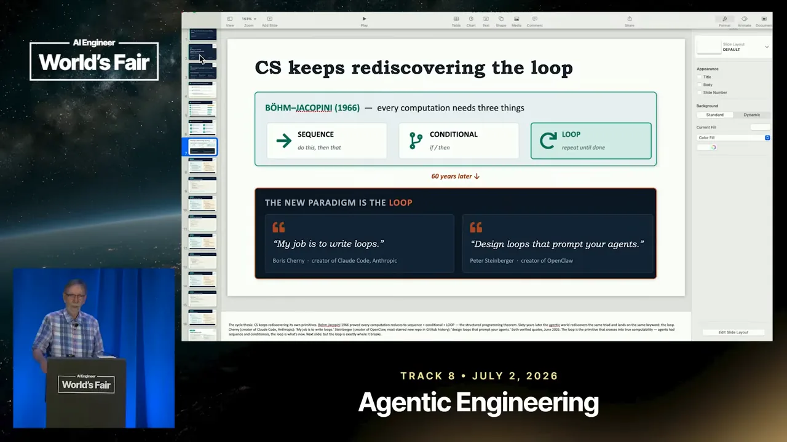
그의 설명으로는 지금까지의 프롬프트는 순차와 약간의 조건 정도였어요. 여기에 루프가 붙으면서 에이전트가 진짜 힘을 얻었다는 거예요.
고객 지원 해결 에이전트: 쏘고 잊지 마세요
시나리오 1 슬라이드는 왼쪽 초록 칸에 패턴, 오른쪽 주황 칸에 안티패턴을 둬요. 이 배치는 시나리오 5까지 똑같아요. 안티패턴 첫 줄 'Fire-and-forget the loop'는 모델을 한 번 부르고 돌아온 답을 그대로 쓰는 거예요. 그러면 루프가 작업 중간에 멈추거나, 도구를 실행해야 할 때 헛돌아요. 두 번째 'Resolve everything autonomously'는 환불 분쟁이나 계정 변경까지 사람 없이 혼자 결정하게 두는 거예요.
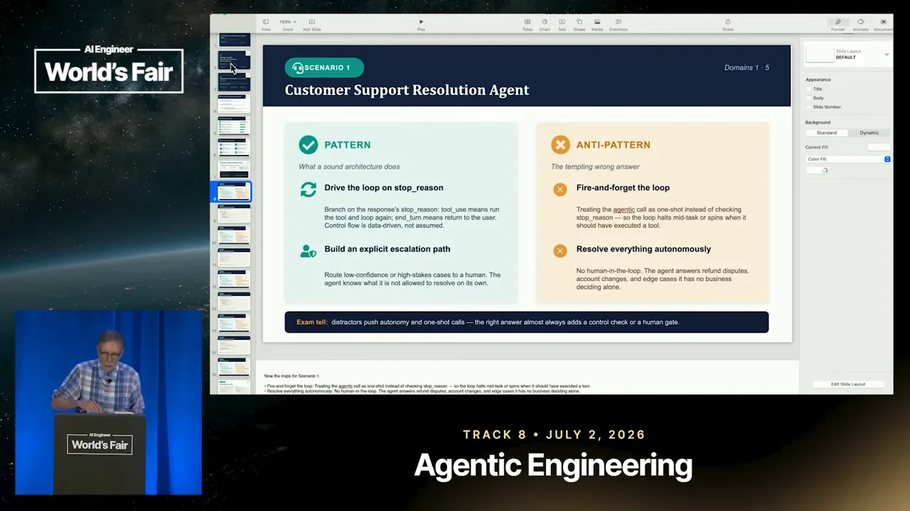
stop_reason으로 갈라지는 루프
예시 코드는 while True 루프예요. 첫 덩어리에서 모델을 부르며 messages와 tools를 넘겨요. messages는 컨텍스트 윈도우에 쌓인 대화 전체예요. 두 번째 덩어리는 stop_reason이 "tool_use"일 때예요. run_tool로 도구를 실행하고 그 결과를 messages에 붙인 뒤 continue로 다시 돌아요. 세 번째 덩어리는 "end_turn"일 때 답을 꺼내고, low_confidence면 escalate_to_human으로 사람에게 넘긴 뒤 break해요.
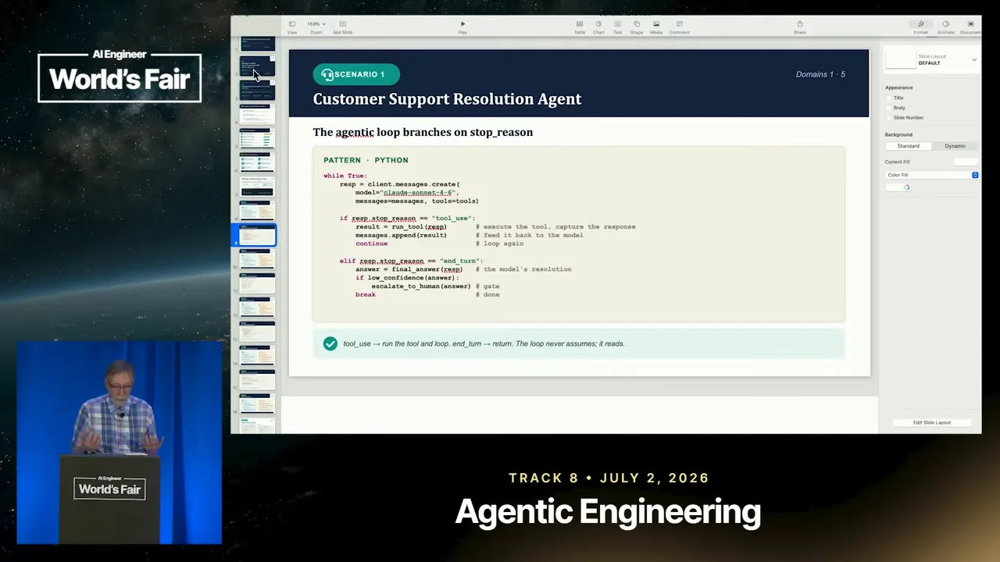
발표자가 여러 번 강조하는 대목이 있어요. LLM은 확률적으로 다음 단어를 예측할 뿐이라 도구를 직접 실행하지 못해요. tool_use로 멈췄다는 건 모델이 도구에 넣을 인자를 데이터에서 뽑아 준비했다는 뜻이에요. 실제 실행은 내 코드가 해요. 결과를 받은 모델이 '성공했구나' 하고 이어 가다가, 더 부를 도구가 없으면 루프가 끝나요.
그는 슬라이드에 없는 분기도 하나 덧붙여요. 토큰이 다 떨어져서 멈췄다면 그 답은 중간에 잘린 거예요. 그대로 쓰면 안 되고 따로 조치해야 해요. 아래 그림은 코드의 두 분기에 이 경우까지 더해 루프 전체를 한 번에 그린 거예요.
flowchart TD A["모델 호출
messages + tools"] --> B{"stop_reason"} B -->|"tool_use"| C["내 코드가 도구 실행"] C --> D["결과를 messages에 추가"] D --> A B -->|"end_turn"| E["답 꺼내기"] E --> F{"확신이 낮나요?"} F -->|"예"| G["사람에게 넘기기"] F -->|"아니요"| H["답 사용"] B -->|"토큰 소진"| I["잘린 답: 따로 조치"]
시나리오 2: CLAUDE.md를 층으로 나누기
시나리오 2는 Claude Code로 코드를 만드는 상황이에요. Claude Code는 CLAUDE.md라는 마크다운 파일에 지켜야 할 규칙을 적어 두면 그걸 읽고 일해요. 슬라이드 오른쪽 안티패턴 첫 줄 'One flat instruction blob'은 모든 규칙을 CLAUDE.md 하나에 몰아넣는 거예요. 그러면 어떤 디렉터리 전용 규칙이 상관없는 작업에까지 새어 들어가고, 규칙끼리 조용히 부딪혀요.
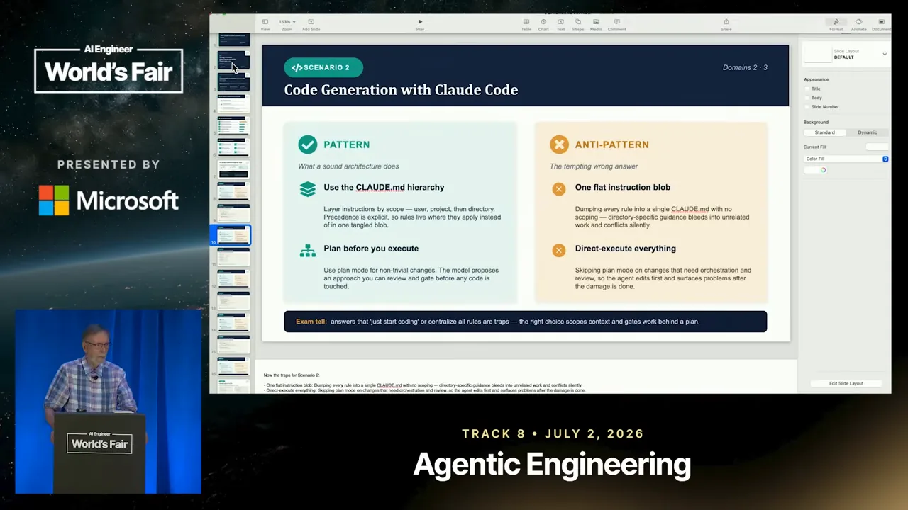
패턴 쪽 두 번째 줄 'Plan before you execute'도 함께 봐 둘 만해요. 간단하지 않은 변경은 plan 모드로 먼저 계획을 받아 검토하고, 그다음에 코드를 건드리게 해요. 계획 없이 바로 고치게 두면 망가진 뒤에야 문제가 드러나요.
규칙은 맞는 층에 둬요
다음 슬라이드는 세 파일을 예로 들어요. 발표자는 Anthropic이 세 층을 권한다고 설명해요. 맨 위 ~/.claude/CLAUDE.md는 모든 프로젝트에 쓰는 개인 규칙('타입 힌트를 선호하고 고치기 전에 설명하라')이에요. 가운데 myrepo/CLAUDE.md는 프로젝트 규칙('pytest를 쓰고 /legacy는 건드리지 마라')이에요. 맨 아래 myrepo/api/CLAUDE.md는 api 폴더 전용 규칙('모든 엔드포인트는 async, Pydantic v2로 검증')이에요.
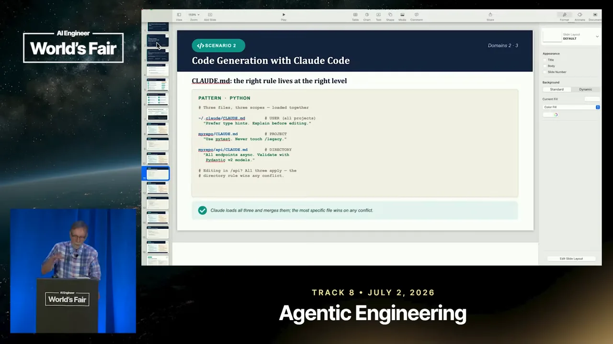
코드 상자 위에 'PATTERN · PYTHON'이라고 적혀 있지만 내용은 파이썬 코드가 아니라 파일 경로와 규칙 문장이에요. 다른 시나리오 슬라이드와 같은 틀을 써서 붙은 표시로 보면 돼요.
시나리오 3: 에이전트는 좁게, 컨텍스트는 조각만
시나리오 3은 여러 에이전트가 나눠서 조사하는 리서치 시스템이에요. 문제는 에이전트들을 내보내 일을 시키고, 답을 쓸모 있는 형태로 모아 오는 거예요. 슬라이드 오른쪽 첫 안티패턴 'One agent, every tool'은 에이전트 하나에 도구 열댓 개를 쥐여 주고 알아서 고르길 바라는 거예요.
발표자의 비유가 와닿아요. 집에 목수를 불렀는데 배관, 목공, 전기 공구를 다 들고 와서 뭐든 할 수 있다고 하면, 차라리 전문 목수를 부르고 싶어지죠. 함수는 한 가지 일만 해야 한다는 함수형 프로그래밍의 생각과도 같아요. 왼쪽 패턴 칸은 에이전트당 도구가 4~5개를 넘으면 추론 품질이 떨어진다고 적어요.
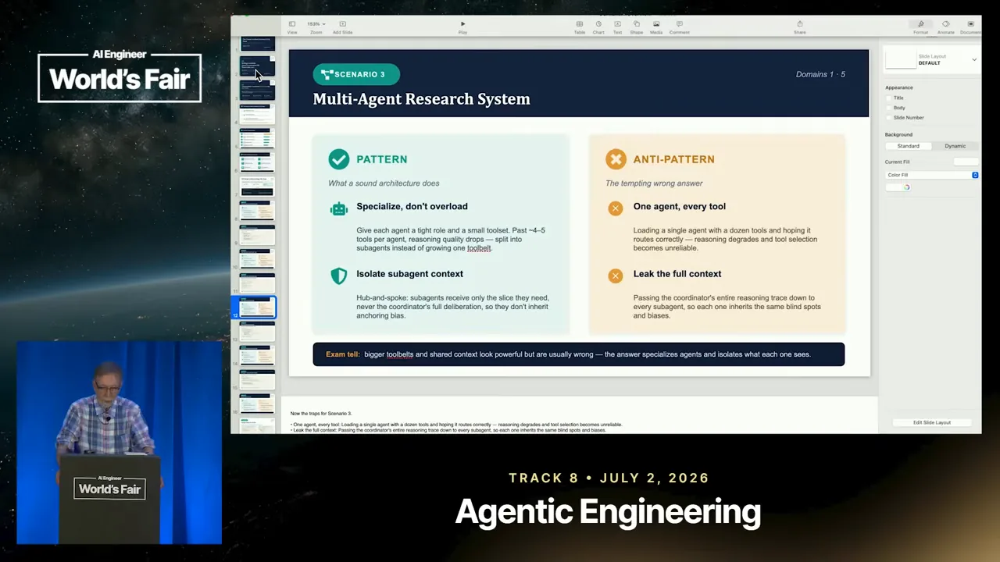
컨텍스트가 새지 않게
두 번째 원칙은 서브에이전트의 컨텍스트가 메인 컨텍스트로 넘치지 않게 하는 거예요. 발표자의 논리는 단순해요. 컨텍스트는 토큰이고, 토큰은 돈이에요. 게다가 컨텍스트가 많을수록 LLM은 더 헷갈려요. 100만 토큰 창이 있다고 다 넣지 말고, 들어갈 것을 줄여야 더 정확해진다고 해요.
예시 코드는 비평가(critic) 에이전트예요. run_critic은 claim과 evidence 두 개만 받아요. 주석에 적힌 대로 메인 팀의 추론 과정은 넘기지 않아요. system에는 역할 하나(CRITIC_ROLE), tools에는 출처를 확인하는 도구 하나(verify_tool)만 줘요.
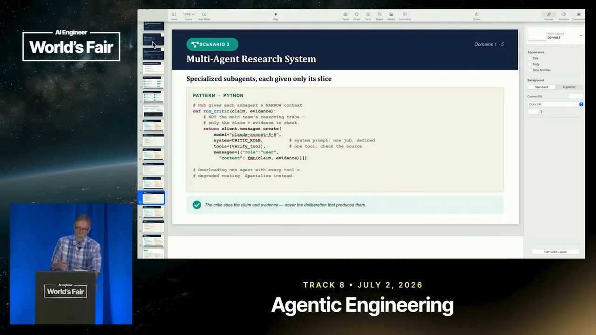
왜 추론 과정을 숨길까요. 여러 에이전트가 서로 이야기하며 협업하면 하나의 생각으로 쏠리는 그룹싱크가 생겨요. 발표자는 파티에서 다들 피자를 먹자는데 혼자 싫어도 분위기를 깨기 싫어 따라가는 상황에 빗대요. 에이전트도 그렇게 움직이는 것 같다고 해요. 그래서 각 에이전트에게는 자기 몫의 조각(slice)만 줘요. 피자 비유가 마침 조각(slice)이라는 말과 맞아떨어지자 그도 그 말을 그대로 받아요.
아래 그림은 이 시나리오와 다음 시나리오 4의 공통 구조를 한 장에 모은 거예요. 허브가 서브에이전트에게 필요한 조각만 내려 주고, 돌아오는 것도 결과만이에요.
시나리오 4: 시끄러운 일은 떼어 내고, 길어지면 압축
시나리오 4는 개발자가 Claude와 함께 오래 일하는 상황이에요. 오른쪽 안티패턴 두 줄은 앞 시나리오에서 한 이야기의 연장이에요. 'Pollute the main session'은 모든 하위 작업이 출력을 통째로 메인 스레드에 쏟아 내 정작 중요한 컨텍스트를 밀어내는 거예요. 'Let context grow unbounded'는 압축 없이 계속 키우는 거예요. 그러면 토큰 비용이 오르고, 긴 대화 중간에 있던 내용을 점점 잘 기억하지 못해요.
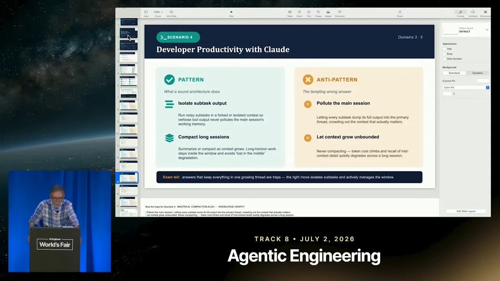
fork해서 요약만 받고, 넘치면 압축
예시 코드는 두 덩어리예요. 위 덩어리는 로그 전체에서 에러를 찾는 시끄러운 작업을 run_in_subagent로 넘기면서 context="fork"를 줘요. 서브에이전트는 새 컨텍스트에서 작업만 받아요. 그 안에서 생각하고 쌓은 토큰은 메인으로 돌아오지 않고, main_messages에는 정리된 summary만 붙어요.
아래 덩어리가 발표자가 흥미롭다고 한 부분이에요. token_count로 메인 대화의 토큰 수를 재고, 150,000을 넘으면 compact를 불러요. 주석대로 오래된 대화는 요약하고 최근 대화는 그대로 둬요.
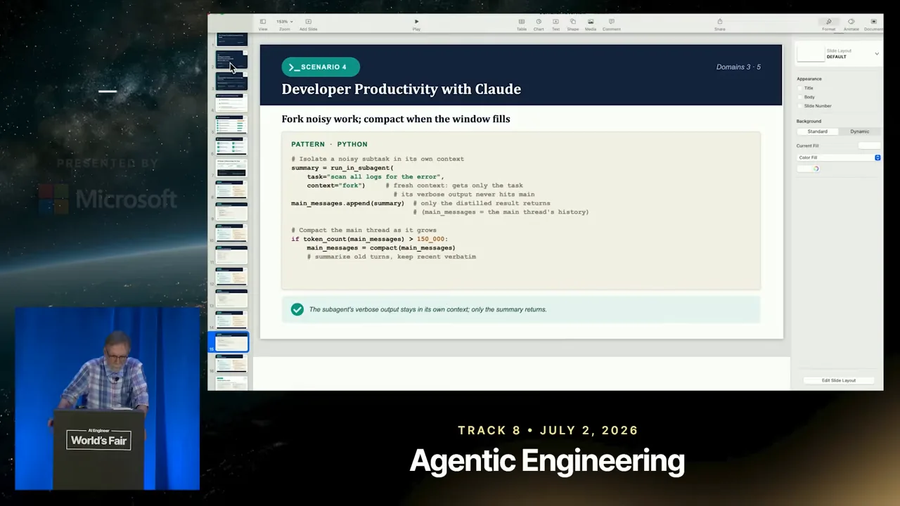
발표자는 Anthropic과 Claude에 거대한 컨텍스트를 줄이는 컴팩션 알고리즘이 있다고 말하면서도, 내부 구현은 잘 모르겠다고 솔직히 말해요.
그리고 잠깐 옆길로 새요. 행사장 밖에서 나눠 주던 작은 책을 소개하는데, Mastra의 Sam Bhagwat가 쓴 책이에요. 책 32쪽에 이 회사가 컨텍스트 압축 로직을 직접 정할 수 있게 해 준다는 내용이 있대요. 기본 클래스를 상속해서 무엇이 중요한지 내 기준으로 압축할 수 있다는 거예요. 발표자는 이걸 압축에 대한 흥미로운 접근이라고 봐요.
시나리오 5: CI/CD와 배치, 그리고 마무리
마지막 시나리오 5는 CI(Continuous Integration)/CD 파이프라인에서 Claude Code를 돌리는 상황이에요. 오른쪽 안티패턴 첫 줄 'Interactive mode in a pipeline'이 핵심이에요. 대화형 모드에서는 Claude가 "이거 해도 될까요? 권한 주실래요?" 하고 멈춰서 물어요. 파이프라인에는 대답할 사람이 없으니 그대로 멈춰 버려요. 발표자는 끝까지 쭉 실행되도록 설정하는 방법이 있다고 해요.
왼쪽 패턴 첫 줄은 그 방법을 적어요. -p(--print)와 --output-format json으로 비대화형 실행을 해서 파이프라인이 기계가 읽을 수 있는 결과를 받게 해요. 두 번째 줄 'Match latency to the task'는 지연을 견딜 수 있는 일, 예를 들어 밤사이 깊은 리뷰는 배치 API로 보내라는 거예요.
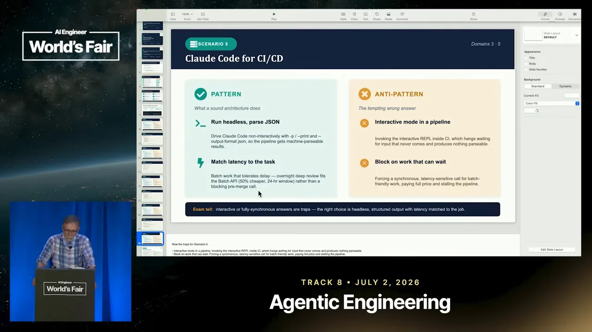
누가 기다리면 헤드리스, 아무도 안 기다리면 배치
다음 슬라이드는 두 방식을 나란히 놓아요. 왼쪽 'SYNC' 상자는 머지 전에 개발자가 결과를 기다리는 경우예요. claude -p로 스테이징된 변경을 리뷰하게 하고 pass/fail을 JSON으로 받아 jq로 바로 판정해요. 오른쪽 'BATCH' 상자는 아무도 기다리지 않는 경우예요. 오늘 올라온 PR(Pull Request) 전부를 client.messages.batches.create로 한꺼번에 보내요. 오른쪽 상자 위에 'async, 50% off, ≤24h'라고 적혀 있어요.
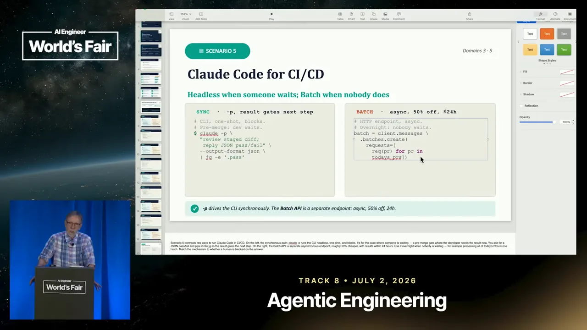
발표자는 배치로 보내면 토큰 비용이 50% 줄고, 결과는 "적어도 24시간 안에" 온다고 말해요. 말로는 '적어도'라고 했지만 슬라이드의 ≤24h는 '24시간 이내'예요. 낮잠을 자거나, 휴가를 가거나, 하루 쉬는 동안 배치로 돌려 두면 덜 낸다는 거예요.
다섯 시나리오를 한눈에
발표에서 본 패턴과 안티패턴을 한 표로 모았어요. 시험에서 보기를 지울 때 오른쪽 열이 그대로 체크리스트가 돼요.
| 시나리오 | 이렇게 해요 | 이건 함정이에요 |
|---|---|---|
| 1. 고객 지원 해결 에이전트 | stop_reason으로 루프를 몰고, 확신이 낮으면 사람에게 넘겨요 | 한 번 부르고 끝내기, 모든 걸 혼자 결정하게 두기 |
| 2. Claude Code로 코드 생성 | CLAUDE.md를 사용자·프로젝트·디렉터리로 나누고, 계획부터 세워요 | 규칙 하나로 몰아넣기, 바로 실행하기 |
| 3. 다중 에이전트 리서치 | 에이전트를 전문화하고, 필요한 조각만 줘요 | 에이전트 하나에 도구 전부, 전체 추론 넘기기 |
| 4. 개발 생산성 | 시끄러운 하위 작업은 떼어 내고, 긴 세션은 압축해요 | 메인 세션 오염, 컨텍스트 무한 증가 |
| 5. CI/CD용 Claude Code | 헤드리스로 JSON을 받고, 기다릴 수 있는 일은 배치로 보내요 | 파이프라인 속 대화형 모드, 기다려도 될 일에 막혀 있기 |
다시, 만들기
발표자는 시간이 거의 다 됐다며 처음 문장으로 돌아가요. 이번에는 시험이라는 말까지 붙여요.
There's no win, there's no fail, there's no exam, only make.
이김도 실패도 없고, 시험도 없어요. 만드는 것만 있어요.
— 영상 19:01
마지막 슬라이드에는 연락처가 있어요. 그가 운영하는 codesupreme.ai는 재즈 팬인 그가 John Coltrane의 「A Love Supreme」에서 따온 이름이래요.
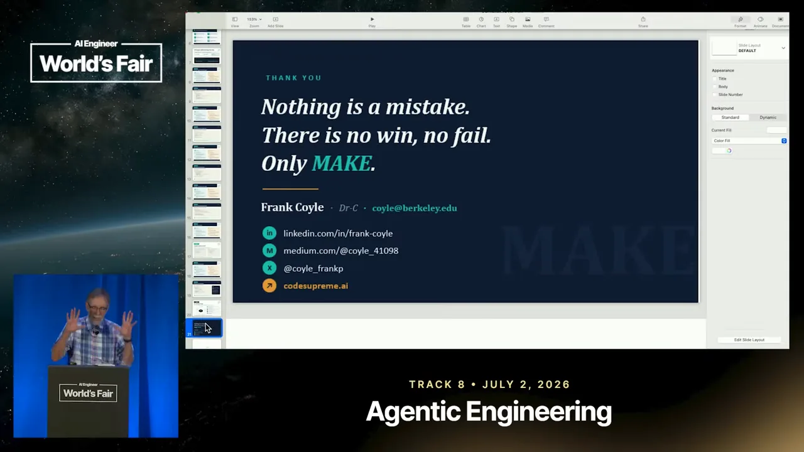